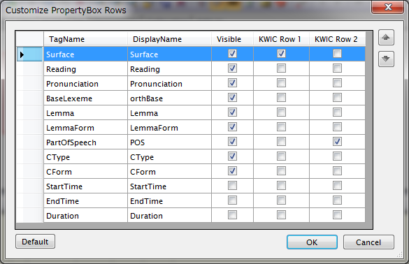

ChaKi.NETの使用する語彙要素(Lexeme)の属性はテーブルのカラムとして既定の名称を持っており、デフォルトではその名称と順番にて検索条件パネルの語条件BoxやLexeme Attributeパネルに表示されますが、これらの表示方法をカスタマイズすることができます。
メニューの"Options" - "Property Box Settings"をクリックして、下図のダイアログを表示させます。

TagNameカラムは、ChaKi.NETの語彙テーブルの持つオリジナルの属性名で編集不可です。これに対し、DisplayNameカラムは左の属性をどのような文字列で実際に表示するかを入力する編集可能な欄です。Visibleカラムはその属性を表示するか否かを指定する欄になります。行の順序（表示順）は、右上の上下矢印ボタンで選択行を上下させることで行うことができます。
この例では、BaseLexemeの名称を"orthBase"に、PartOfSpeechの名称を"POS"にそれぞれ変更し、また順序も入れ替えています。
なお、この結果はすぐに反映されますが、既に作成済みのWordListのカラム名のみは検索時の名称・並び順のまま変更されません。
また、WordListやCollocation実行時に、実際には値を持っている属性を非表示にすると予期しない結果となりますので注意が必要です。英語コーパスなどCForm, CTypeがすべて空で使われていない場合にそれらを非表示にするといった使用法であれば問題ありません。
この設定の影響を受けるのは下記の部分です。
- 条件入力で使用される語Box
- Lexemeパネル
- WordListのカラム
- Collocation条件の"Targe Attributes"リスト
- コーパス情報のLexeme一覧のカラム
また、この設定内容はユーザのローカルフォルダ（Vistaの場合だと"Local SettingsChaKi.NET）の"PropertyBoxSettings.xml"にセーブされます。